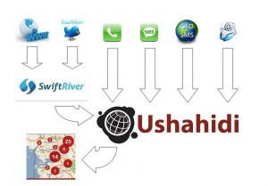

Archivio per la categoria ‘Recensioni’
29 giugno, 2012 | di Giovanni Allegri
 “Science for a Changing World”, la scienza per un mondo che sta cambiando. E’ con un video di sette minuti e mezzo che il servizio geologico nazionale statunitense (USGS) ha deciso, con una sintesi narrativa eccellente, di raccontare le sue attività e i suoi onorevoli 133 anni di storia. Rimbalzato rapidamente tra i nostri tweet, ha incuriosito noi tutti di TANTO, fino a spingere Andrea Borruso a domandare sulla pagina di Facebook dell’USGS, se fossero disponibili i sottotitoli per poterlo tradurre in italiano, così come avevamo fatto per i quattro episodi di Geospatial Revolution. Poco meno di un giorno (il tempo del fuso orario) ed arriva la risposta col link ai sottotitoli. Con un tempismo da fuga in maglia rosa, Antonio Falciano inizia la traduzione con Amara, il servizio di traduzione sottotitoli online fornito da Universal subtitles, che poi concludo io con qualche ritocco e correzione di refusi qua e là. Et voilà, ecco che nel giro di due giorni il video è a disposizione anche per chi avesse meno dimestichezza con la lingua inglese.
“Science for a Changing World”, la scienza per un mondo che sta cambiando. E’ con un video di sette minuti e mezzo che il servizio geologico nazionale statunitense (USGS) ha deciso, con una sintesi narrativa eccellente, di raccontare le sue attività e i suoi onorevoli 133 anni di storia. Rimbalzato rapidamente tra i nostri tweet, ha incuriosito noi tutti di TANTO, fino a spingere Andrea Borruso a domandare sulla pagina di Facebook dell’USGS, se fossero disponibili i sottotitoli per poterlo tradurre in italiano, così come avevamo fatto per i quattro episodi di Geospatial Revolution. Poco meno di un giorno (il tempo del fuso orario) ed arriva la risposta col link ai sottotitoli. Con un tempismo da fuga in maglia rosa, Antonio Falciano inizia la traduzione con Amara, il servizio di traduzione sottotitoli online fornito da Universal subtitles, che poi concludo io con qualche ritocco e correzione di refusi qua e là. Et voilà, ecco che nel giro di due giorni il video è a disposizione anche per chi avesse meno dimestichezza con la lingua inglese.
Ma perché abbiamo desiderato tradurlo e pubblicarlo? Al di là dei contenuti del video e del fascino che le attività dell’USGS hanno da sempre esercitato su professionisti e ricercatori dell’ambito naturalistico, personalmente la sua visione mi ha suscitato suggestioni e riflessioni che penso possano essere sintetizzate in tre aspetti.
Anzitutto, mi stupisce l’attenzione che l’USGS, come anche altri istituti ed enti federali statunitensi, dedica alla comunicazione e alla divulgazione delle proprie attività. La volontà di rendere partecipi e consapevoli i cittadini di cosa succede tra i muri di istituti di ricerca pubblici come il servizio geologico, è sicuramente alimentata dall’interesse, da parte delle istituzioni federali, di mostrare l’efficacia ed il ritorno degli ingenti investimenti, sostenuti dalla fiscalità pubblica, che ogni anno vengono riversati in tali enti. Avvicinare i cittadini al mondo della ricerca, raccontare – ed uso specificatamente questo termine – il lavoro dei ricercatori, nelle forme di volta in volta più opportune ed efficaci, ritengo debba essere considerata una delle componenti fondamentali e prioritarie per ogni ente, perché oltre ad essere un esercizio di trasparenza, è un’attività che aiuta ad alimentare nelle persone la consapevolezza dell’importanza della ricerca, pura e applicata, e a sfatare l’immaginario di un mondo astratto, perso tra teorie, libri e formule, poco attinenti alla realtà quotidiana della gente. Questo video mi offre l’occasione di augurare anche ai nostri enti di coltivare sempre di più questa pratica e di curarla particolarmente anche come occasione per riacquisire un po’ del credito che, molte gestioni economiche e scelte politiche disastrose e poco lungimiranti degli ultimi anni, hanno contribuito a logorare. A questo proposito mi complimento con i vari enti dell’area fiorentina per la due giorni di “Scienzaestate”, recentemente realizzata presso il Polo Scientifico dell’Università di Firenze.
Un altro aspetto che mi ha particolarmente colpito è la modalità con cui l’USGS gestisce le sue pubblicazioni. Mi soffermo soltanto su un aspetto specifico, relativo a questo video. Alla nostra richiesta di poter avere le trascrizioni dei testi, hanno potuto rispondere immediatamente grazie al fatto che tutti i video presenti nella loro galleria multimediale, oltre ad essere scaricabili in vari formati, sono corredati anche dai testi trascritti disponibili nel formato standard W3C Timed Text (TT) Authoring Format V1.0, grazie al quale è stato possibile impiegare gli strumenti offerti da Amara per creare i sottotitoli tradotti. Sembrerà poco, ma è anche attraverso queste “raffinatezze” che si coglie una reale volontà di condividere e promuovere un prodotto, così come viene affermato anche dalla mission del gruppo Core Science dello stesso USGS.
Concludendo, vorrei sottolineare un aspetto che ritengo importante, e spesso sottovalutato, per l’efficacia della comunicazione istituzionale. Sottolineo nuovamente il verbo “Raccontare”. Comunicare l’attività di un ente significa riuscire a trasmettere, parallelamente ad un contenuto puramente informativo, sensazioni, suggestioni ed emozioni, che permettono di condividere non soltanto il lato tecnico e funzionale dell’attività ma anche- e forse, soprattutto – il “cuore” che anima e muove tanti operatori e ricercatori. Conoscere è sì un’attività analitica, ma alla base è alimentata dalla capacità di lasciarsi affascinare, di fermarsi ad ammirare, di alimentarsi di stupore, ma anche di affrontare il fallimento, di attendere il momento giusto, di superare fatiche e attese… E’ insomma un’esperienza profondamente umana, e come tale dovrebbe essere raccontata.
(Qui sotto il video sottotitolato in italiano, a questo link il video originale)
Posted in Recensioni | 3 Comments »
16 aprile, 2012 | di Lorenzo Perone
Questo articolo è stato pubblicato originariamente sul Blog di Working Capital.
Ushahidi, che in Swahili significa testimonianza, è oggi una una società non-profit che sviluppa software libero. Il suo core business è lo sviluppo di software per la raccolta, la visualizzazione e la rappresentazione di informazioni su cartografia interattiva.

E’ un valido esempio di come una startup possa nascere da un’idea di successo, in una realtà come quella del Kenya, che non associamo a incubatore di tech company.
Tutto nasce durante le violenze che si sono verificate in Kenya, nel 2008 a seguito delle elezioni politiche. Un gruppo di persone tra cui l’attivista kenyota Ory Okolloh, si trovarono a documentare sui loro blog, anche attraverso i commenti, le violenze che stavano accadendo nel paese. Qualcuno lanciò l’idea di mappare i luoghi delle violenze attraverso Google Maps, e Ory rilanciò la proposta via twitter, chiedendo supporto alla comunità degli sviluppatori software del paese.
In tre giorni era online Ushahidi.com, il sito originale, ancora visibile in una sezione del sito attuale. Ushahidi ebbe una grandissima risposta, ben 45,000 utenti inviarono le loro testimonianze dai luoghi degli scontri, permettendo di seguire l’evoluzione della situazione nel paese in maniera indipendente da quanto riportato dagli organi ufficiali. Un esperimento riuscito di citizen journalism e crowdsourcing.
Da allora Ushahidi non rappresenta più solo una piattaforma web ma una realtà aziendale complessa, al cui al nucleo originale dei fondatori Erik Hersman, Juliana Rotich, Ory Okolloh eDavid Kobia si è affiancato un nutrito gruppo di sviluppatori e di specialisti di tecnologia, attivisti politici, giornalisti ed esperti di comunicazione. La cosa che colpisce, guardando le pagine del team è l’estrema distanza geografica che separa queste persone che vivono, in qualche caso, in continenti diversi. Il cuore pulsante del progetto rimane in Kenya anche se, formalmente, la società ha sede ad Orlando in Florida.
La piattaforma di Ushahidi dal 2008 ad oggi è stata testimone di numerose emergenze tra cui ilterremoto di Hahiti, la crisi libica, il terremoto in Giappone e l’attualissima crisi siriana, riuscendo a supportare i cittadini e le organizzazioni che operavano sul campo attraverso la gestione e pubblicazione su mappa delle richieste di soccorso e delle risorse disponibili.
La facilità nella diffusione è stata favorita da Crowdmap, uno dei prodotti creati dalla startup a partire dall’idea originale e che permette di utilizzare le risorse web di Ushahidi per mettere on line, gratuitamente, una versione personalizzata della piattaforma in pochi minuti.
Questo ha permesso, anche in Italia, la realizzazione di diversi deployment, tra cui Rifiutiamoci.
Uno dei punti di forza di Ushahidi è senza dubbio la versatilità. Consente di operare in condizioni logistiche di comunicazione profondamente diverse, adattandosi a scenari di utilizzo profondamente differenti.
La funzionalità di base è quella di rendere disponibili, anche in tempo reale, informazioni geolocalizzate relative a diverse categorie di eventi su una mappa, permettendo di analizzare il flusso temporale degli avvenimenti attraverso una timeline che può essere attivata per rappresentarli dinamicamente.
E’ possibile ricevere via email o SMS un messaggio se un evento di determinato tipo si presenta ad una determinata distanza da una posizione prefissata, allertando ad esempio un giornalista o un’unità di soccorso.
Le segnalazioni possono essere inviate via SMS o nel caso di uno smartphone con GPS integrato, utilizzando il formato GeoSMS che invia automaticamente indicazioni rispetto alla propria posizione. Sono state create specifiche apps per iPhone ed Android ed è prevista un’interfaccia dibackoffice per inserire le segnalazioni ricevute telefonicamente oltre che per validare le diverse segnalazioni, provenienti anche da email e da web.
Un’altra delle innovazioni legate allo sviluppo della start-up è stata la realizzazione di una innovativa piattaforma: SwiftRiver, che è attualmente in versione beta, che analizza e verifica inreal-time grandi flussi di dati provenienti da diversi canali quali: email, twitter, SMS e feed RSS. Il sistema provvede ad un’analisi semantica del flusso permettendo la l’auto-categorizzazione e classificazione dei dati analizzati sulla base di parole chiave.
SwiftRiver è utilizzato anche da Wikipedia per analizzare come gli editor della famosa enciclopedia tracciano, valutano e verificano l’attendibilità delle fonti relative alle voci pubblicate.
Ushahidi ha maturato una così grande esperienza sul campo da aver creato anche dei veri e proprihow-to per l’organizzazione di un sistema di monitoraggio elettorale, per il fund raisinge per la gestione della sicurezza in realtà “democraticamente” difficili.
Tra i progetti italiani che lo utilizzano possiamo citare:
Posted in Recensioni | 5 Comments »
10 marzo, 2011 | di Giovanni Allegri
Importanti novità nella prima release beta di Mapserver 6!
- Output in formato Kml
- Migliorata l’etichettatura: le etichette con la proprietà ANGLE FOLLOW a volte portavano ad avere lebal con angoli strettissimi e diventavano illeggibili. Adesso è possibile chiedere di evitarle, lasciando spazio ad etichette in posizioni più favorevoli.
- Migliorato il supporto al Feature Style
- Cresciuti i formati di output per le richieste WFS GetFeature
- Map viewer integrato con Openlayers
- Migliorata la gestione dei file temporanei
- Possibilità di abilitare/disabilitare i singoli layer nei servizi OGC
- Possibilità di combinare feature provenienti da layer differenti
- Supporto al clustering delle feature nei layer puntuali
Release note originale:
http://lists.osgeo.org/pipermail/mapserver-users/2011-March/068125.html
Posted in Recensioni | No Comments »
22 luglio, 2010 | di Pietro Blu Giandonato
E’ ormai da qualche mese che ESRI, con ArcGIS.com è ufficialmente con la testa tra le nuvole. Giovanni Allegri ha già dato notizia di GISCloud in un precedente articolo, in effetti il primo servizio applicativo di GIS “evoluto” e abbastanza maturo totalmente utilizzabile via web.
I tempi, la tecnologia e il mercato per parlare di GIS in the cloud – come aveva teorizzato Vector One due anni fa – sono dunque ormai maturi, e la scelta di ESRI di lanciare la sua applicazione webGIS quasi assieme alla prossima release di ArcGIS 10 è quindi “dovuta”. Tanto più che la stessa ESRI ha stretto una partnership con Amazon Web Servicesgrazie alla quale è possibile “affittare” ArcGIS Server sulla piattaforma di cloud computing di Amazon.
A mio avviso però, ArcGIS.com va in totale controtendenza con le strategie alla base di progetti come appunto GISCloud o anche CloudMade e GeoCommons e in genere quelli basati su svariate soluzioni tecnologiche, volte a garantire l’interoperabilità tra i dati seguendo le specifiche dell’Open Geospatial Consortium.
Un GIS “in the cloud” dovrebbe essere “aperto” per definizione, almeno per quanto riguarda la possibilità per l’utente di utilizzare dati e servizi di mappa via web provenienti da svariate fonti. Certo, può non esserlo per la parte applicativa, come proprio GISCloud, mentre invece CloudMade offre risorse di sviluppo, e ancora GeoCommons offre servizi business ad-hoc. Bene, ArcGIS.com non lo è nè dal punto di vista dei dati utilizzabili, nè tanto meno applicativo (avevamo dubbi?), anzi è “ESRIcentrico” in una maniera oserei dire “ottusa”. Gli unici contenuti che è possibile caricare nel proprio account non sono, tanto per dire, nemmeno shapefile (sic!) ma formati proprietari ESRI come ad esempio Map Package e Layer Package, mentre tra i servizi di mappa via web si possono importare solo quelli erogati mediante ArcGIS Server… e non certo con formati OGC (WMS, WFS, ecc)!
Qui sotto potete “ammirare” una mappa che ho realizzato utilizzando esclusivamente dati erogati dalla Provincia di Trapani e dalla Regione Siciliana, ovviamente mediante ArcGIS Server. In realtà i dati della Provincia sono esposti in maniera un pò confusa, e lo si può notare consultando i singoli servizi nella relativa pagina di ArcGIS Server. In sostanza sono stati messi troppi layer assieme, spesso ripetendoli da servizio a servizio. Quelli della Regione invece sono organizzati con un singolo layer per ogni singolo servizio, e dunque meglio utilizzabili in ArcGIS.com. In realtà mettere più layer insieme in un solo servizio non è affatto sbagliato, anzi, a patto che lo si faccia seguendo il criterio di realizzare una “vista” o mappa, ovvero rendendo gli strati visivamente compatibili (trasparenze, ordine di sovrapposizione, ecc).
Visualizza mappa più grande
La mappa, incorporabile in pagine web mediante <iframe>, risulta estremamente scarna, con la possibilità di impostare solo la dimensione e metterci o meno un tool di zoom. L’obiettivo è quello di indurre l’utente a visualizzarla direttamente su ArcGIS.com cliccando sul link “Visualizza una mappa più grande”. E magari fargli aprire un account…
Insomma, il cloud GIS secondo ESRI è chiuso, sia dal punto di vista applicativo (e questo ci può pure stare) sia dell’interoperabilità con i dati. E di questo francamente non ne vedo proprio la necessità, visto che la sua posizione dominante – almeno nei segmenti business e pubblico – è sempre molto salda, e non sarebbe di certo stata intaccata dando la possibilità di utilizzare dati vettoriali come shapefile (non dico PostGIS) e importare servizi di mappa via web con standard OGC.
Posted in Recensioni | 6 Comments »
2 dicembre, 2009 | di Pietro Blu Giandonato
 C’era bisogno dell’ennesimo progetto GIS open-source? Non bastavano i veterani QGIS e GRASS e la numerosa schiera dei più giovani uDIG, GvSIG, OpenJUMP, MapWindow solo per citare i più famosi? Ma certo che no! Open source in open minds ci piace dire da queste parti…
C’era bisogno dell’ennesimo progetto GIS open-source? Non bastavano i veterani QGIS e GRASS e la numerosa schiera dei più giovani uDIG, GvSIG, OpenJUMP, MapWindow solo per citare i più famosi? Ma certo che no! Open source in open minds ci piace dire da queste parti…
E allora senza indugi vediamo di che si tratta.
Intanto il nome del software Whitebox – affermano al Centro di Idrogeomatica dell’Università di Guelph, Canada – è ispirato alla filosofia della trasparenza, base dell’open source. Sembra abbiano scoperto l’acqua calda, e invece qualcosina in più la danno. In ogni tool che compone il GIS c’è un bel pulsantino che mostra il codice usato per realizzarlo. Più trasparente di cosi! Didatticamente costituisce un enorme valore aggiunto, anche dal punto di vista dello sviluppo.
E si spingono anche più oltre… pare Whitebox sia autenticamente estensibile. E’ possibile infatti creare nuovi tool ad hoc in relativamente pochi passaggi usando un wizard di scripting per Python o Visual Basic/C# , tra l’altro convertendo il codice da un linguaggio all’altro! Leggete qui e qui. C’è anche la possibilità di creare delle finestre per gestire i nuovi tools, mediante un dialog designer.
E’ possibile scaricare il codice sorgente del software – distribuito con licenza GPLv3 – o già compilato, pronto per essere utilizzato senza doverlo installare, ma solo su Windows. Non parlano sul sito di portabilità su Linux, ma chi è più esperto di me potrà valutarlo grazie al sorgente. E magari farcelo sapere qui su TANTO 
Andiamo avanti con la prova out of the box.
(continua…)
Posted in Recensioni | 1 Comment »


{kind=link}